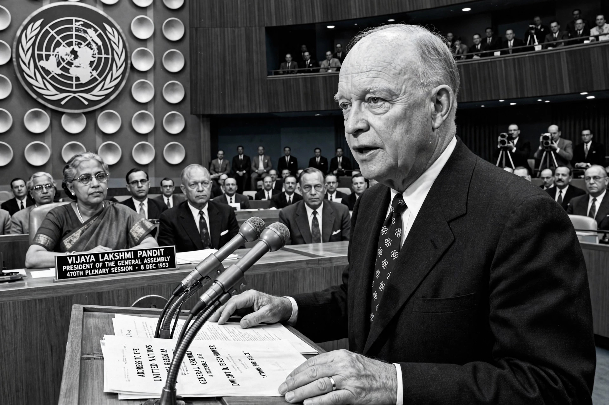

Atoms for Peace was the title of a speech delivered by United States President Dwight D. Eisenhower to the United Nations General Assembly on 8 December 1953, and the name of the programme he proposed for international cooperation in the peaceful uses of atomic energy.

Eisenhower proposed that nuclear powers contribute fissile material to an international atomic energy agency under the United Nations, which would allocate it for peaceful purposes such as electricity generation, agriculture and medicine. The speech sought to ease Cold War tensions after the Soviet Union's development of nuclear and hydrogen weapons.
The proposal led to the creation of the International Atomic Energy Agency (IAEA) in 1957, whose emblem and mission draw on the speech. In the United States, amendments to the Atomic Energy Act in 1954 permitted greater sharing of nuclear technology, and the Atoms for Peace programme supplied research reactors, training and isotopes to many countries.
Critics note the programme also spread technology and expertise later used in some states' nuclear weapons programmes, and served public-relations aims. The phrase became a slogan for 1950s optimism about nuclear power.